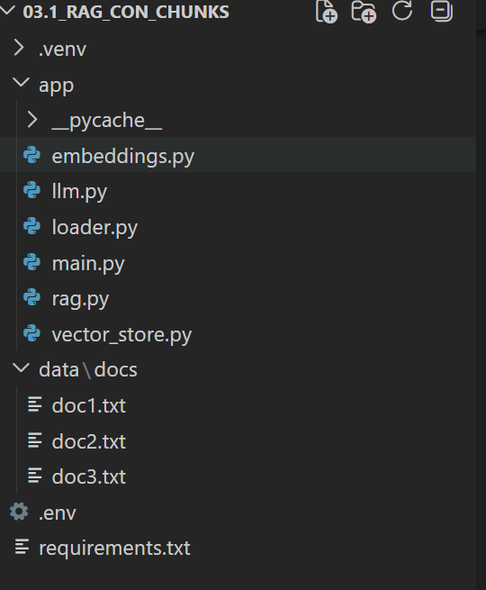
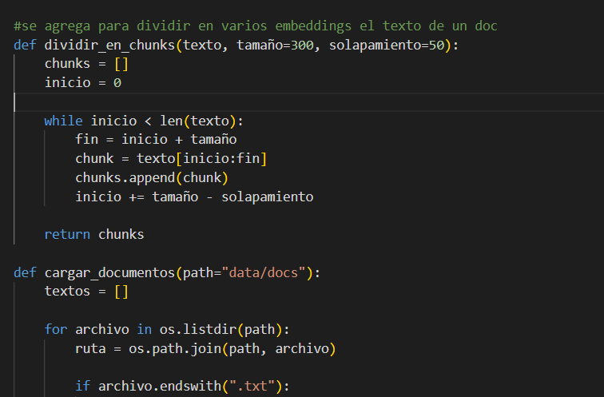
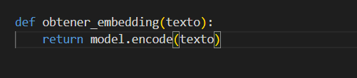
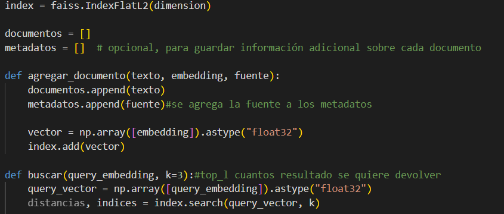
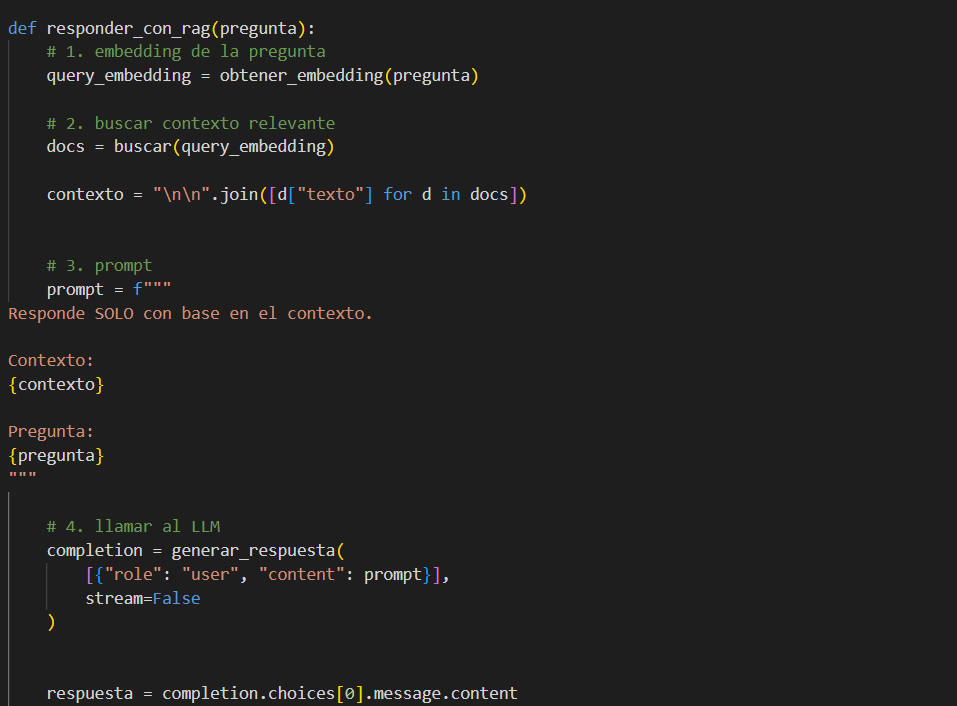
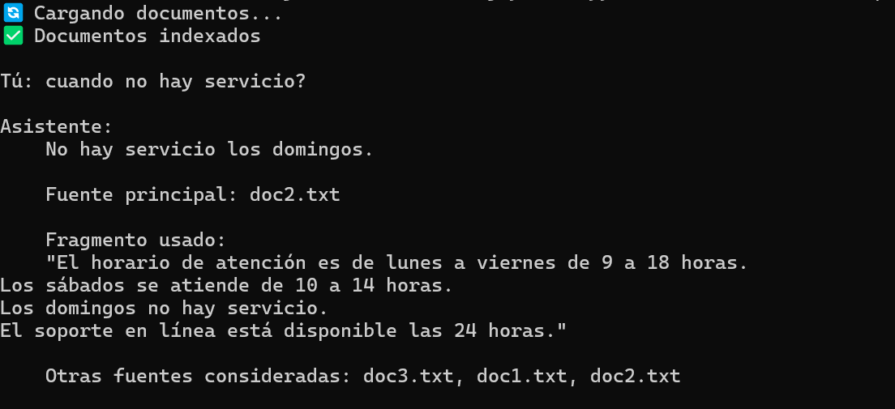

Proyecto
(teoria) Agente de IA para Búsqueda Semántica con RAG y Embeddings
Este proyecto consiste en el desarrollo de un agente de inteligencia artificial capaz de encontrar similitud semántica entre consultas y documentos, utilizando técnicas modernas como embeddings, bases de datos vectoriales (FAISS) y Retrieval-Augmented Generation (RAG).
El objetivo principal fue comprender e implementar desde cero cómo un sistema puede entender el significado de una pregunta y recuperar información relevante, incluso cuando no coincide literalmente con el texto original.

⚙️ Arquitectura Modular del Sistema
El proyecto fue diseñado bajo una arquitectura modular, separando responsabilidades para facilitar su mantenimiento, escalabilidad y comprensión.

📄 Procesamiento y División de Documentos (Chunks)
Se implementó un sistema de carga de documentos que incluye una función para dividir el contenido en chunks (fragmentos de texto de tamaño controlado).
Esto permite:
- Evitar respuestas extensas e irrelevantes
- Mejorar la precisión en la recuperación de información
- Optimizar el rendimiento del modelo

🔢 Generación de Embeddings
Cada fragmento de texto es transformado en un vector numérico mediante embeddings, lo que permite representar el significado del contenido en un espacio matemático.
Gracias a esto, el sistema puede comparar textos por similitud semántica y no solo por coincidencia de palabras.

🗄️ Base de Datos Vectorial (FAISS)
Se integró FAISS como motor de búsqueda vectorial, encargado de:
- Almacenar los embeddings
- Indexar los vectores para búsquedas eficientes
- Recuperar los fragmentos más similares a una consulta
La base de datos se genera en memoria (cache), aunque el sistema puede escalar fácilmente a soluciones en la nube como Pinecone.

🔎 Pipeline RAG (Retrieval-Augmented Generation)
Cuando el usuario realiza una consulta:
- La pregunta se convierte en embedding
- FAISS busca los vectores más similares en la base de datos
- Se seleccionan los fragmentos más relevantes (Top-K)
- Se construye un contexto dinámico
- Se genera un prompt combinando contexto + pregunta
Este proceso permite que el modelo responda con mayor precisión y fundamentación.
Además, se implementaron filtros como:
- Documentos más relevantes consultados
- Selección del mejor resultado
- Control del número de fragmentos mediante Top-K

💬 Generación de Respuesta
Finalmente, el sistema genera una respuesta basada en el contexto recuperado, mostrando además información relevante como:
- Fuente principal
- Documentos utilizados
- Fragmentos más relevantes
🚀 Resultado
El agente es capaz de responder preguntas de manera contextualizada, demostrando cómo un sistema basado en RAG puede:
- Comprender significado, no solo palabras
- Recuperar información precisa de múltiples documentos
- Generar respuestas fundamentadas y trazables